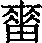

25  无妄卦 天雷无妄
无妄卦 天雷无妄
无妄，元亨利貞。其匪正有眚，不利有攸往。初九，无妄往，吉。六二，不耕穫，不菑畬，則利有攸往。六三，无妄之災，或繫之牛，行人之得，邑人之災。九四，可貞，无咎。九五，无妄之疾，勿藥有喜。上九，无妄行，有眚，无攸利。
【卦名】
今本：无妄 阜陽簡：无亡 帛書：无孟 歸藏：母亡 秦簡：毋亡 上博簡：亡忘 清華簡：亡孟 海昏：無亡
无妄的「妄」假借作「望」或「亡」、「忘」，古時卦名可能作「無望」或「無亡」。作「無望」時為無所期望，也就是意料之外、意外的意思；或者是沒有希望、絕望。「無亡」則為不死，或無可逃的意思。至宋明時多依王弼，將妄解釋為虛妄，無妄即真實而不虛，並以《中庸》至誠之道來詮釋。
無望
无妄帛書作「无孟」，清華簡作「亡孟」，可視為「無望」的假借，因古望、孟音同，彼此通用，如《爾雅》十藪，宋有「孟諸」，《周禮》作「望諸」，鄭注：「澤藪曰望諸，卽孟豬也。」
《史記‧春申君列傳》：「世有毋望之福，又有毋望之禍。今君處毋望之世，事毋望之主，安可以無毋望之人乎？」《正義》解釋說：「無望謂不望而忽至也。」這是以「無望」解「毋望」，意指不在期望之內而突然發生的事，也就是意料之外、意外的意思，上乾下震的晴天霹靂之象。
馬融和鄭康成也都以「望」解釋「妄」，無妄即無望，《說文》：「望，出亡在外，望其還也。」望為期望、期盼的意思。無望為沒有希望、沒有期望。馬融：「妄猶望，謂无所希望也。」鄭康成：「妄之言望，人所望宜正，行必有所望。行而无所望，是失其正，何可往也。」馬鄭注解无望的意思似乎類似於現今我們說的沒有希望、絕望，可能由此引申為災難。京房對無妄卦義的解釋則說：「雷起乾宮，人民多疾病。」雷起乾宮即是无妄卦，這或許是无妄解釋作「災」的原因。《雜卦》就說：「无妄，災也。」
總合漢儒對無妄的解釋，類似於現今我們說的「絕望」的意思，這也是「无妄，災也」。但「無望」亦可解釋為期望之外，意外、無所期望的意思。
無亡
虞翻則將無妄解釋為無亡，不死的意思，並批評京房及漢儒將無妄解釋作旱災，生物皆死，是錯誤的註解。虞翻引《序卦》傳說，如果無妄卦萬物都死了，那麼接下來的大畜卦，有什麼可畜養的？因此可證无妄就是無亡，萬物不死，所以大畜卦才有物可畜。
妄，亡也。謂雷以動之，震為反生，萬物出震，无妄者也，故曰「物與无妄」。《序卦》曰：「復則不妄矣，故受之以无妄。」而京氏及俗儒，以為大旱之卦，萬物皆死，无所復妄，失之遠矣。有无妄然後可畜，不死明矣。若物皆死，將何畜聚？以此疑也。（《周易集解》「天下雷行，物與无妄」注引虞翻）
虞翻的說法也可以從其他文獻得到印證，馬國翰輯本歸藏作「母亡」，出土秦簡作「毋亡」，阜陽簡作「无亡」。學者或認為這都是「无妄」之假藉，但佐以虞翻注解來看，亡也有可能才是本字。古文亡除了可通孟、妄、望、忘之外，這些字之中亡字最為古老，至少周初就有，其餘他字都在西周末期之後才開始出現。
「無亡」除了解釋為「不死」，還有「勿逃」的意思。因「亡」也有出逃的意思。《說文》：「亡，逃也。」段注：「逃者亡也，二篆為轉注。亡之本義為逃，今人但謂亡為死，非也。引申之則謂失為亡，亦謂死為亡。孝子不忍死其親，但疑親之出亡耳，故喪篆从哭亡。亦叚為有無之無，雙聲相借也。」依段玉裁說法，亡的本義為出逃，後來引申為消失不見，以及死亡。古代雙親死，孝子不忍說死，而說雙親出逃去了，這也是篆書「喪」字寫作「哭亡」的原因。亡字後來又引申為有無的無。因此「毋亡」除了可解釋為不死之外，也可解釋為不出逃，有勸人勇敢面對的意思。此解也很符合該卦的卦義。
無孟
帛書作「无孟」，清華簡作「亡孟」，除了可視為「無望」的假借之外，「孟」也可借為「猛」，《說文》孟「長也」，段注：「讀如芒。《爾雅》：孟，勉也。此借孟為猛。」
「無猛」就是要人不鬥狠，有勸人勿逞匹夫之勇，必需冷靜的意思，這也相當符合該卦的卦象和卦義。無妄震在內，有伺機而動、冷靜之意味。反之，若雷震在外則成「大壯」，大壯者大傷也。
无妄
《說文》：「妄，亂也。」傳統皆以無所虛妄、不亂來，詮釋無妄卦，《老子》第十六章「不知常，妄作凶」的妄。這個觀點大致從王弼開始，而在宋明以後幾乎成為一面倒的看法。
卦象下雷動，外乾天，為動以天之義。動以天者無虛妄，反之，如果動以人，就是虛妄。這也是卦辭說的「其匪正有眚」，行為不正（動以人）則將有災眚。卦象也是雷生於天下，乾壯於上，艮山養於中，養生機於天下之義。乾為天威，震為行，天威下行之象。
卦序上無妄是繼復卦而來，《序卦》：「復則不妄矣，故受之以无妄。」一般易學家解釋皆認為，復為改過遷善，善心之歸來，是人在道德上的歸根復本之卦。改過之後就不會再犯錯，也就不亂，所以復卦之後接著是無妄。如程頤就是最典型的代表：「復者反於道也，既復於道則合正理而无妄，故復之後，受之以无妄也。」「无妄者至誠也，至誠者天之道也。」持此看法的易學家多不勝屬，不再列舉。
據虞翻說法，「無妄」為「無亡」，無死，不死之意。復為陽氣歸來，生機藏於下，為反生不死之象。因萬物不死，所以有物可畜，故序卦無妄之後繼之以大畜。虞翻所言甚是，這也符合象傳所說：「天下雷行，物與无妄，先王以茂對時育萬物。」
【卦義】
總合以上各種說法，比對全體經文，「无妄」當以漢儒的「無望」，作意外解最為允當，或可解釋為無所期望。其次是傳統的「無所虛妄」及虞翻的「無亡」（不死）。
《易經》六十四卦卦義原本就經常有一字多義、一語多關的用法。无妄卦的解釋上當然也可如此。在總體卦義的理解上，可以總合以上卦名發展而給予不同面向的意義：無妄是意外，可能有災難的一卦（無望），但就如《尚書》所言「天作孽猶可違，自作孽不可逭」，老天作孽的意外是我們承受的起的，面對意外能夠冷靜下來（無猛），不要有過多的預想（無望），勇敢面對（勿亡，不逃），動之以天（無虛妄、不亂為），就可以重生再來（無亡，不死）。卦象下雷動，外乾天，為動以天之義。動以天者者無虛妄，反之，如果動以人，就是虛妄。這也是卦辭說的「其匪正有眚」，行為不正（動以人）則將有災眚。
何妥：乾上震下，天威下行，物皆絜齊，不敢虛妄也。
卦辭雖說「不利有攸往」，但六爻中似乎從內卦的偏向「利有攸往」，至外卦漸轉為偏向「不利有攸往」。如初九「无妄往吉」，六二「不耕穫，不菑畬，則利有攸往」，兩爻都是利有攸往。至九四「可貞无咎」，開始要人安定不妄動。九五「勿藥有喜」，至上九「无妄行，有眚，无攸利」，往則有眚。
无妄，元亨利貞。其匪正有眚，不利有攸往。
- 彖曰：无妄，剛自外來而為主於內，動而健，剛中而應，大亨以正，天之命也，其匪正有眚，不利有攸往。无妄之往，何之矣？天命不祐，行矣哉？
- 象曰：天下雷行物與，无妄，先王以茂對時育萬物。
- 易之義：无孟之卦，有罪而死，无功而賞，所以故也。［按：為災。］
- 昭力：无孟之卦，邑塗之義也。
【今解】
發生意想不到的事情，大亨通而宜於貞定。若是行為不正則會有災禍，不利出門或遠行。
無妄為突然發生意想不到的事，發生意外。
《尚書．太甲》：「天作孽猶可違，自作孽不可逭。」無妄元亨利貞，是天作孽猶可違。發生意外的事仍可以得亨通而貞定，不需驚慌。「其匪正有眚」則是自作孽，若是自己行為不正，胡作妄為則無藥可救。
「其匪正有眚」，以上博簡依今文來寫當為「其非復有眚」，與「不利有攸往」連讀，意思為如果不回家（改過遷善）則有災難，不宜有所往。
【字義】
无妄：即「無望」，沒有期望、沒有期待，謂事情沒有期望而來，就是意料之外。《說文》：「妄，亂也。」妄為亂，虛妄。無妄，不亂來、無虛妄。傳統皆作如此解釋。虞翻解釋為「無亡」，不死，希望猶在。
匪正有眚：不正就有災禍。匪，通非。匪正，非正，指行為不正，胡作非為。眚，音「節省」的省，災禍的意思。災眚經常放在一起說，災為天災，眚則為人禍。匪正有眚，意指行為不正則會有人禍。
不利有攸往：不宜有所往，不宜有遠往。得此卦不宜出門，出門可能會有災。
天下雷行物與无妄：應作「天下雷行物與，无妄」。傳統讀作「天下雷行，物與无妄」，但比對六十四卦的《大象傳》，除了无妄卦之外，首句都是卦象的說明，緊接著是卦名，沒有任何一卦會在這當中加入任何贅辭，因此宜讀作「天下雷行物與，无妄」為宜，言天下雷聲大作而萬物並作，無亡，或無望。物與有兩種解釋。一，與為施予，「物與」為「與物」之倒裝。與物，陽氣無不施與而能普及萬物。《九家易》：「天下雷行，陽氣普徧，無物不與，故曰物與也。物受之以生，无有災妄，故曰物與无妄也。」二，與通舉，物舉，即萬物並作。虞翻：「與，謂舉。妄，亡也。謂雷以動之，震為反生，萬物出震，无妄者也，故曰物與无妄。」
先王以茂對時育萬物：先王以茂盛之道依時而養育萬物。侯果：「雷震天下，物不敢妄；威震驚洽，无物不與，故先王以茂養萬物，乃對時而育矣。時泰，則威之以无妄；時否，則利之以嘉遯。是對時而化育也。」 朱熹：「先王法此以對時育物，因其所性而不為私焉。」程頤：「先王觀天下雷行發生賦與之象，而以茂對天時，養育萬物，使各得其宜，如天與之无妄也。」
初九，无妄往，吉。
象曰：无妄之往，得志也。
【今解】
心無期望的前往，吉。
「妄」應作「望」，「无妄往」即「無望往」，心中沒有期望的前往。《象傳》說：「无妄之往，得志也。」內心無所期望的前往，可以得志，得所願，因此為吉。
「無望」也可解釋為意外，意料之外。「無望往」為意料之外的行程，如有意外的事需前往處理，不需擔憂，此事為吉。
傳統解釋無妄為毫無虛妄。無妄往吉，心正而誠地前往則吉。程頤：「九以陽剛為主於內，无妄之象，以剛實變柔而居內，中誠不妄者也，以无妄而往，何所不吉。」朱熹：「以剛在內，誠之主也。如是而往，其吉可知。」
六二，不耕穫，不菑畬，則利有攸往。
- 象曰：不耕穫，未富也。
- 《禮記．坊記》：子云：「禮之先幣帛也，欲民之先事而後祿也。先財而後禮則民利，無辭而行情則民爭，故君子於有饋者，弗能見則不視其饋。《易》曰：『不耕穫，不菑畬，凶。』以此坊民，民猶貴祿而賤行。」
- 昭力：不耕而穫，戎夫之義也。
【今解】
此段爻辭當依《禮記．坊記》修正為：「不耕穫，不菑畬，凶。」或者「不耕穫，不菑畬，凶，利有攸往。」「則」字可能是「凶」字之誤。帛本無「則」字。另依上博簡改為今文為「不耕而穫，不畜之」。
不耕田就想得到收獲，不開墾荒地就要有熟田，凶。這是告戒人不要想著不勞而穫，只等著能夠得到上天之眷顧而獲得意外之財。
《禮記．坊記》孔子引用此段經文說明如何避免人民心存不勞而獲，有完整的論述，不像是誤引經文。孔子又說：「以此坊民，民猶貴祿而賤行。」言以此避免人民心存佼倖想要不勞而獲，人民都還是只重視得到的財祿有多少，而不重視實際的行動。
鄭玄注：言必先種之乃得獲，若先菑乃得畬也。安有無事而取利者乎？田一歲曰「菑」，二歲曰「新田」，三歲曰「畬」。
另依《說文》：「畬，三歲治田也。《易》曰：『不葘畬田』。从田余聲。」段玉裁注說：「易曰：『不葘畬田』，『田』汲古以為衍而空一字，宋本皆有之，蓋『凶』字之誤，許所據與《坊記》所引同也，《周易》无妄六二爻辭。」
傳統解釋「不耕穫，不菑畬」相當紛歧，但折衷之後可大致解釋為不與人競逐搶先，做最前面耕田的事，而只求得參與做最後收穫的事。不貪功與人爭相做最早的墾荒工作，只隨人後去種已開墾好的成熟田地。能夠如此謹慎，知道開荒闢土的艱險，不求創始的功勞，只保守追求穩定的成果，那麼就宜於有所往。
或者依宋明儒注解，此言人應當不求回報，無所期望地去做事，不要耕種時想著要收穫，開墾新地時想著要有熟田。能如此不謀功計利，心無所求，則利於有所往。
【字義】
不耕穫，不菑畬：告戒人不應該想要不勞而獲，不要妄想有意外之財。就如有人不想耕種只想擁有收獲，不想開墾荒地只想直接擁有成熟的耕地。以下則是其他可能的解釋：一、不做耕作的事，只作收穫的事；不做墾荒的事，只做耕種熟田的事。意思為不去搶創始的功勞。如孔穎達：「六二處中得位，盡於臣道，不敢創首，唯守其終，猶若田農不敢發首而耕，唯在後獲刈而已。不敢菑發新田，唯治其畬熟之地，皆是不為其初而成其末，猶若為臣之道，不為事始而代君有終也。」二、不在耕作時想著收穫，不在墾荒時就想著良田。意思為做事不求名利，而只求盡人事，聽天命。如朱熹：「言其无所為於前，无所冀於後也。」三、做事無耐心，想要一步登天。《說文》：「菑，不耕田也。从艸、甾。《易》曰：不菑畬。」段玉裁注：「周易无妄六二爻辭，《周禮》注作不葘而畬，語較明。言為之無漸也。畬，二歲田也。」耕，指的是春耕，耕作，是農作的最早階段。穫，收穫，是農作最後的收成。菑，音「資」，第一年才剛開墾之中的田地，也是指「墾荒」的意思。古文菑（葘）通災。此段經文可能以「菑」喻「災」。畬，音「魚」，開墾二、三年之後的田地，就是所謂的「熟田」，適合耕作的田。虞翻：「田在初，一歲曰菑。在二、三歲曰畬。」鄭玄：「一歲曰菑，二歲曰新田，三歲曰畬。」《爾雅》：「一歲曰菑，二歲曰新田，三歲曰畬。」馬融：「菑，田一歲也。畬，田三歲也。」
六三，无妄之災。或繫之牛，行人之得，邑人之災。
象曰：行人得牛，邑人災也。
【今解】
意料之外的災難。有人綁了牛，路過的人順手牽走了，但村人就因此受害。
此言有人將牛綁著，可能是綁在樹旁，被剛好路過的人順手牽走，於是引來了村民的一場災難。至於什麼災難？有人認為就是主人遺失了牛。有人認為因為主人發現牛不見之後告官，而讓無辜的村民遭到拘捕。
此段爻辭當與上古故事有關，只是這個故事已經失傳，無論那種說法，都只是後人之編織與臆測，實則還有待更多資料的考證。
《莊子‧則陽》記載，田牟（齊威王）違背與魏瑩（魏惠王）的盟約，魏國犀首聞而恥之，說：「請受甲二十萬，為君攻之，虜其人民，係其牛馬。」虜人繫牛似乎與古代攻伐城邑有關。
【字義】
无妄之災：意料之外的災難。「无妄」當作「無望」，無所望而忽至，意料之外，意外的意思。
或繫之牛，行人之得，邑人災也：這段故事有許多種講法，除了以上歷代注解者較常採用的說法外，以下列舉其他見解。孔穎達依王弼注如此解釋：因為沒有依照「不耕獲，不菑畬」的規定擅自去耕田，所以牛被扣留抓走，主管的官員因此得到了牛，村民損失慘重，可謂一場災難。孔穎達將「繫」解釋作主管扣留抓走牛，而「行人」是「有司」（主管）。高亨則認為，有人家裡發生火災，匆忙間把牛綁在外面，但牛因火災而驚慌逃走，再被行人牽走。所以這是行人的獲得，村人的災難。高亨認為「災」就是火災的意思。
九四，可貞，无咎。
象曰：可貞无咎，固有之也。
【今解】
可以貞定，沒有罪咎。《象》曰：「可貞无咎，固有之也。」意味自己本來就有了，所以貞定為吉，不需外求。
九五，无妄之疾，勿藥有喜。
象曰：无妄之藥，不可試也。
【今解】
意料之外的疾病，不用吃藥就會痊癒。
傳統解釋為不知原因的疾病，不要亂吃藥，病情自然會好。依虞翻應作「無亡之疾」，此為死不了的疾病。
《象》曰：「无妄之藥，不可試也。」與經文並不一致。意思為意外而來的藥，即不知來源的藥，不可以亂嘗試。不要亂吃藥的意思。
【字義】
无妄之疾：傳統解釋以「无妄」為「不虛妄」、「至誠」，於文義實在不通。因此另解釋為莫須有的疾病，不知原因的疾病，此亦通「無望」，即「意外」之義。虞翻則以「妄」為「亡」，「无妄之疾」就是不會死的病，死不了的病，意指病情並不嚴重。
勿藥有喜：不用吃藥就會痊癒。喜為痊癒的意思，如損六四「損其疾，使遄有喜」，兌九四「介疾有喜」。侯果：「若下皆不妄，則不治自愈，故曰勿藥有喜也。」朱熹：「勿藥而自愈矣。」
上九，无妄行，有眚，无攸利。
象曰：无妄之行，窮之災也。
【今解】
意料之外的行程，有災難，無所利。
帛書作「无孟之行」，依帛本當作「无妄之行」。
或可解釋為無所期望的行程，對於此行沒有目標與期望，如此而往則有災眚，無所利。反之，若能有所望而往，則可免於災眚。
无妄行，有眚：突然而來的意外之行，這是在計畫之外，因此讓人不知所措。象曰：「无妄之行，窮之災也。」這將讓人窮困，因而遇到災難。省，音同「節省」的「省」，人禍。
無攸利：無所利，無遠利。沒有任何好處。既然有災禍，當然就不會有益處。
【彖傳注】
无妄，剛自外來而為主於內，動而健，剛中而應，大亨以正，天之命也，其匪正有眚，不利有攸往。无妄之往，何之矣？天命不祐，行矣哉？
剛自外來而為主於內：以卦變解釋初九主爻。无妄卦可能是從遯卦而來，遯九三下降之初，成為主爻，因此說「剛自外來而為主於內」。周易原本以上面三爻為外，下面三爻為內，此卦的內外，是初與三的相對應關係。三為外，初為內。虞翻：「遯上之初。此所謂四陽二陰，非大壯則遯來也。」蜀才：「此本遯卦。」朱熹認為是從訟卦而來，可供參考：「為卦自訟而變，九自二來而居於初。」若以无妄為訟卦來，則大畜當是由需卦而來。訟變無妄為陽從坎中退至初而坎險不見，因此為不利有攸往。需至大畜則是坎中九五前行至上，為有功而涉大川之象，因此大畜說利涉大川。但為何要從需訟兩卦卦變？仍有待釐清與探索。
動而健：以上下二體卦德解釋卦義。无妄卦下震為動，上乾剛健，動而健之象。
剛中而應：九五剛中，為治卦之主爻，與六二相應。
大亨以正，天之命也：解釋元亨利貞，大亨以正即元亨利貞。
无妄之往，何之矣。天命不祐，行矣哉：解釋經文「不利有攸往」沒有期望地前往，心中沒有目標，那麼是要到那裡？天命也不會保佑，如何能行？。鄭康成：「妄之言望，人所望宜正，行必有所望。行而无所望，是失其正，何可往也。」
勘誤
“易之義：無孟之卦，有罪而死，無功而賞，所以？故也。［按：？為災。］”？處似有脫字。